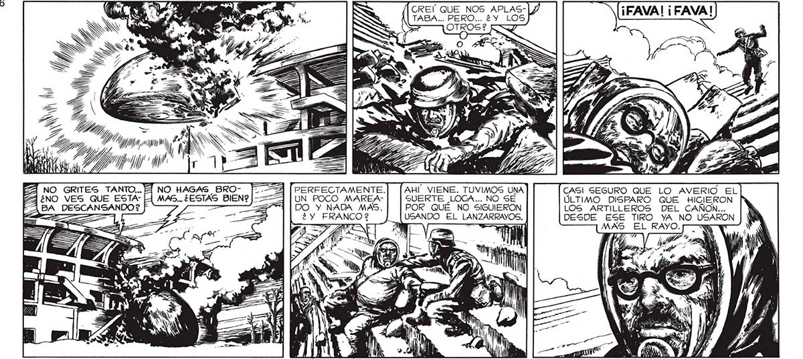
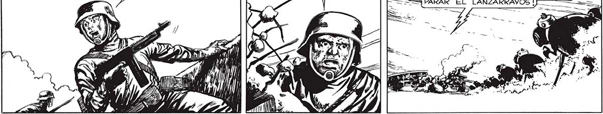

116 NN li 2), Y ; Pp 0900 eh N y SR N 1 y 47 Lal pi VA N WN Y ZA NO GRITES TANTO... E ¿NO VES QUE ESTANO HAGAS BRO- [-- 3 | PERFECTAMENTE. AHI VIENE. TUVIMOS UNA CASI SEGURO QUE LO AVERIO EL MAS... ¿ESTAS BIEN? j- UN POCO MAREA- SUERTE LOCA... NO SE ÚLTIMO DISPARO QUE HICIERON BA DESCANSANDO ? > DO Y NADA MAS. POR QUE NO SIGUIERON LOS ARTILLEROS DEL CANON... : ¿y NCO 2 USANDO EL LANZARRAYOS. DESDE ESE TIRO YA NO USARON ól TN — MAS EL RAYO. yw ¡QUERRÁN RECUPERARLO! ¡NO SE LO DE- | === BEN LLEVAR! ¡FUEGO CONTRA ELLOS! [—- = == ¡ARRIBA ESAS AMETRALLADORAS: ¡PRE==3 PARAR EL LANZARRAYVOS ! o “

